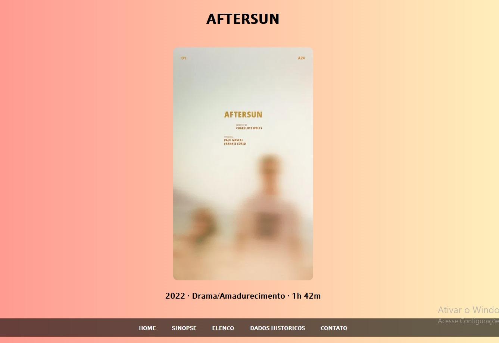
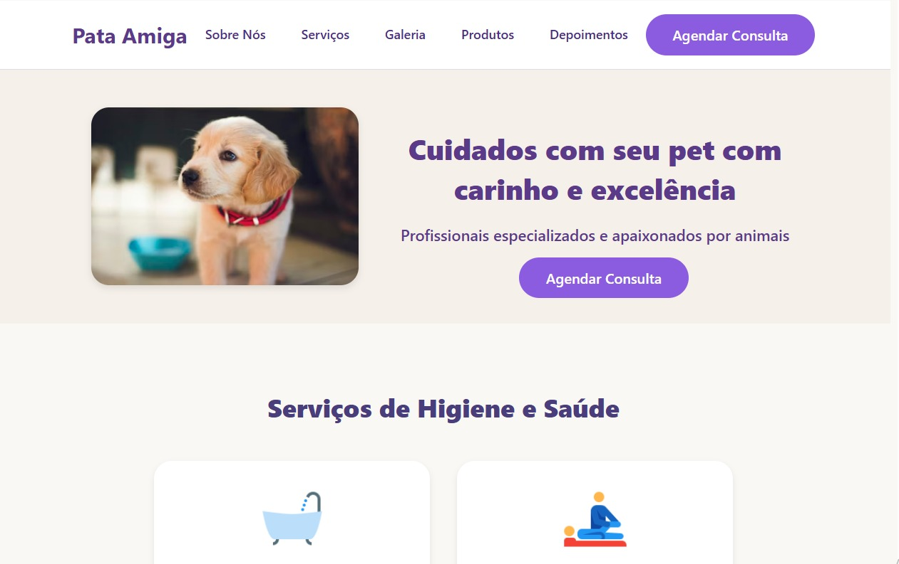
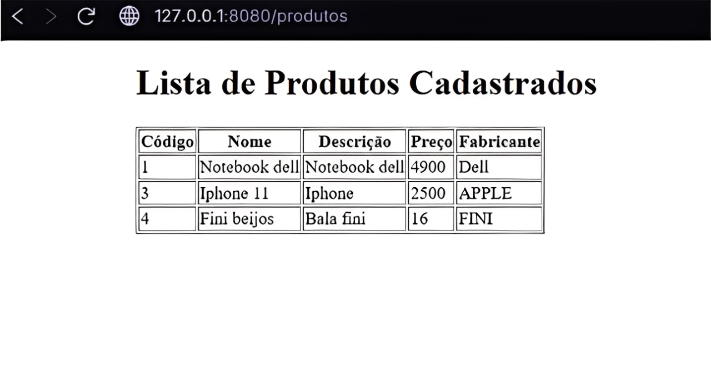
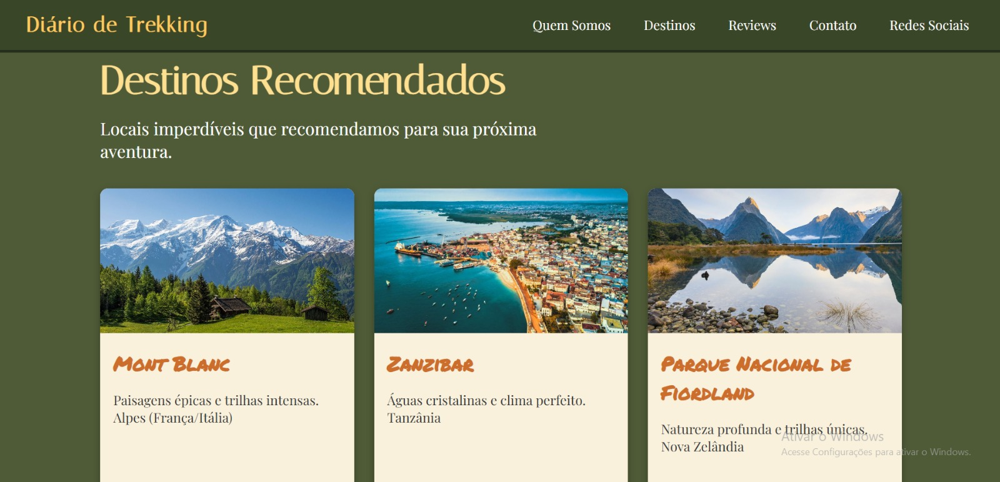
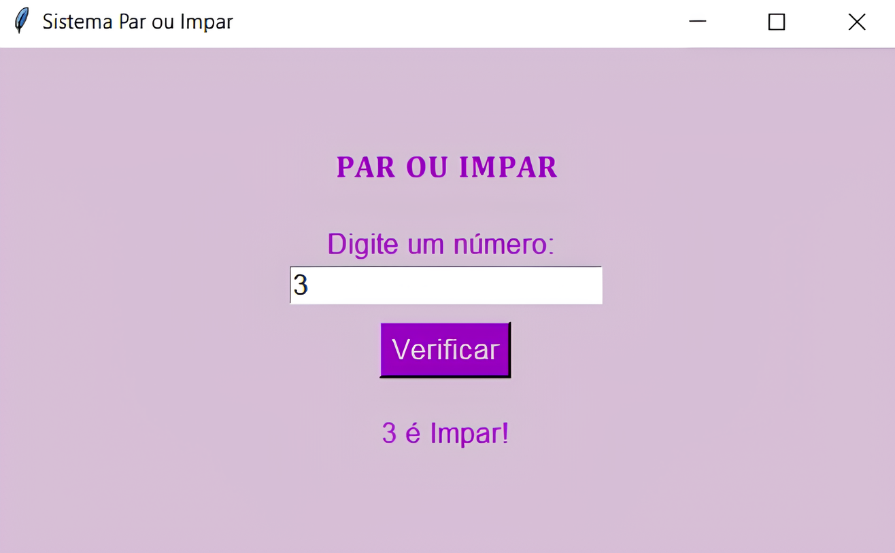

Meu trabalho

Projeto de site sobre filmes criado para explorar layout visual atrativo e organização de conteúdo, proporcionando uma experiência envolvente ao usuário.
Site para uma clínica utilizando HTML e CSS, com foco em organização de conteúdo, navegação intuitiva e aplicação de boas práticas de programação web.

Site de pet shop desenvolvido para apresentar produtos e serviços, com interface organizada, navegação intuitiva e foco na experiência do usuário.

Loja virtual com integração ao MySQL, permitindo gerenciamento dinâmico de produtos e usuários, com layout responsivo e navegação intuitiva.

Site de viagens completo e responsivo com design interativo, animações CSS e múltiplas páginas. Criado com HTML e CSS.

Implementação de algoritmo para classificação de números em pares e ímpares, reforçando uso de estruturas condicionais e repetição.